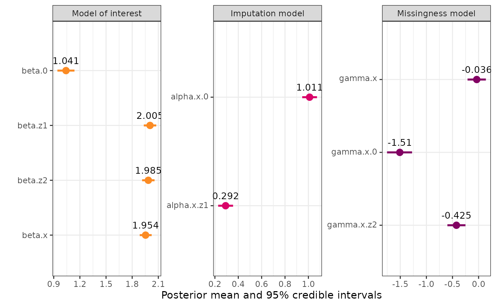
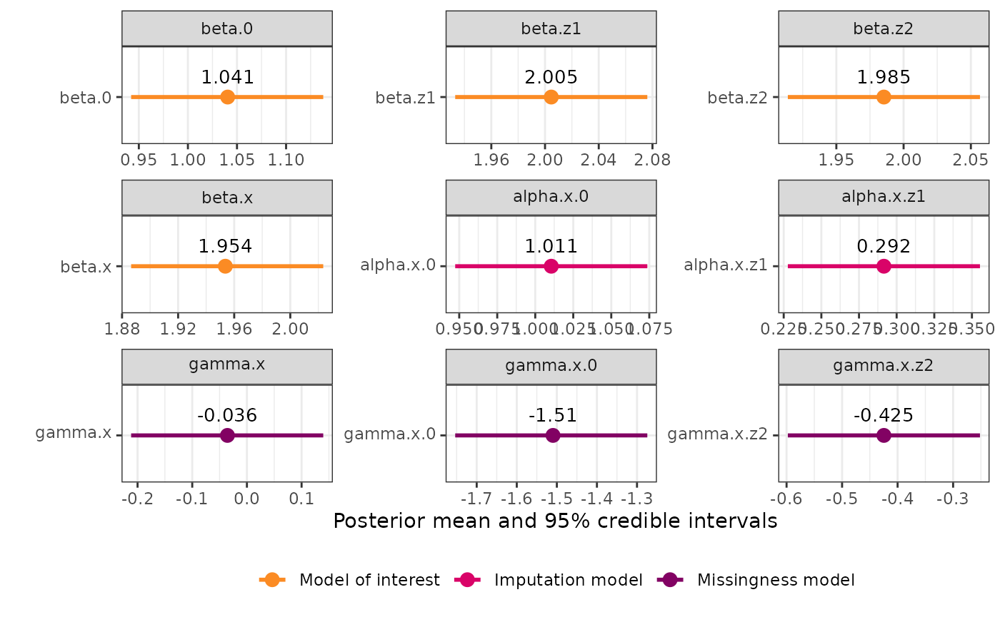
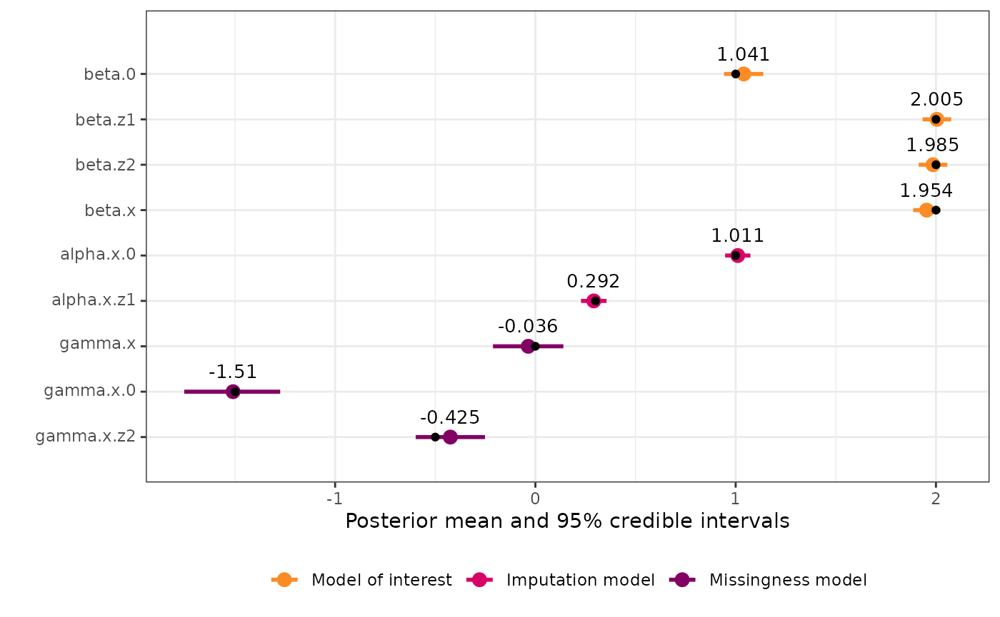

Once we have fitted an inlamemi model, we can use the
inlamemi plot method to see a visual summary of the
estimated coefficients and their 95% credible intervals.
As an example, we use a data set with missingness in one variable. For the model, we will then have three levels: the model of interest, the imputation model, and the missingness model.
mis_mod <- fit_inlamemi(formula_moi = y ~ x + z1 + z2,
formula_imp = x ~ z1,
formula_mis = m ~ z2 + x,
family_moi = "gaussian",
data = mar_data,
error_type = "missing",
prior.beta.error = c(0, 1/1000),
prior.gamma.error = c(0, 1/1000),
prior.prec.moi = c(10, 9),
prior.prec.imp = c(10, 9),
initial.prec.moi = 1,
initial.prec.imp = 1)This is the default plot:
plot(mis_mod) The
The plot() function itself has some arguments that can be
used to exclude sub-models, or to create a circle highlighting the
coefficients of the variable with error or missingness. There is also an
option to make the coefficient names into greek letters:
plot(mis_mod, greek_coefficients = TRUE)But there are also some further modifications that can be made to the
plot object, which is an object of class ggplot:
This means that we can use standard ggplot2 functions to
build on this plot.
If you are familiar with ggplot2, you know that it takes
a data frame, and then it lets us map the data in the columns very
elegantly in whichever way we specify. That means that the plot created
above has also been created based on a data frame, and in order to
modify the object further, we need to know the names of the columns, in
order to refer to them correctly. We can access the data frame like
this:
mis_plot$data
#> coefficient_type mean sd quant_0.025 0.5quant
#> beta.0 moi_coef 1.03931764 0.04997531 0.9409140 1.03935881
#> beta.z1 moi_coef 2.00434215 0.03646226 1.9328131 2.00434724
#> beta.z2 moi_coef 1.98534882 0.03638084 1.9139946 1.98534837
#> beta.x error_coef 1.95345849 0.03468473 1.8855062 1.95334505
#> gamma.x error_coef -0.03590935 0.08933428 -0.2129049 -0.03552408
#> alpha.x.0 imp_coef 1.01057708 0.03222437 0.9473657 1.01058033
#> alpha.x.z1 imp_coef 0.29154160 0.03253330 0.2277314 0.29154237
#> gamma.x.0 mis_coef -1.51062644 0.12266267 -1.7560301 -1.50938329
#> gamma.x.z2 mis_coef -0.42469255 0.08823634 -0.5977162 -0.42469230
#> quant_0.975 mode variable_raw model_type
#> beta.0 1.1374429 1.03935375 beta.0 Model of interest
#> beta.z1 2.0758418 2.00434713 beta.z1 Model of interest
#> beta.z2 2.0567056 1.98534836 beta.z2 Model of interest
#> beta.x 2.0220724 1.95287318 beta.x Model of interest
#> gamma.x 0.1388355 -0.03391743 gamma.x Missingness model
#> alpha.x.0 1.0737699 1.01058034 alpha.x.0 Imputation model
#> alpha.x.z1 0.3553475 0.29154237 alpha.x.z1 Imputation model
#> gamma.x.0 -1.2736062 -1.50952648 gamma.x.0 Missingness model
#> gamma.x.z2 -0.2516704 -0.42469230 gamma.x.z2 Missingness model
#> error_indicator var1 var2 variable_greek variable
#> beta.0 0 beta 0 beta[0] beta.0
#> beta.z1 0 beta z1 beta[z1] beta.z1
#> beta.z2 0 beta z2 beta[z2] beta.z2
#> beta.x 1 beta x beta[x] beta.x
#> gamma.x 1 gamma x gamma[x] gamma.x
#> alpha.x.0 0 alpha 0 alpha[0] alpha.x.0
#> alpha.x.z1 0 alpha z1 alpha[z1] alpha.x.z1
#> gamma.x.0 0 gamma 0 gamma[0] gamma.x.0
#> gamma.x.z2 0 gamma z2 gamma[z2] gamma.x.z2Now, let’s say we would like to have three separate plots, one for
each sub-model. We could do this using facet_wrap():
mis_plot +
facet_wrap(~model_type, scales = "free")
We can make the same plot with the greek names:
plot(mis_mod, greek_coefficients = TRUE) +
facet_wrap(~model_type, scales = "free")We could also add a different theme:
plot(mis_mod, greek_coefficients = TRUE) +
facet_wrap(~model_type, scales = "free") +
theme_minimal()
Any other changes through the theme function could also be
done, for instance we could remove the legend since this isn’t necessary
when we have a faceted plot.
plot(mis_mod, greek_coefficients = TRUE) +
facet_wrap(~model_type, scales = "free") +
theme(legend.position = "none")
You could also change the font and font size here, plus many other
options. Here are some ways you could modify the font in the facet
header and axis title, using the showtext package for
selecting a different font from Google fonts:
library(showtext)
showtext_auto()
js <- "Josefin Sans"
font_add_google(js)
plot(mis_mod, greek = TRUE) +
facet_wrap(~model_type, scales = "free") +
theme(legend.position = "none",
strip.text = element_text(family = js, size = 13),
axis.title = element_text(js))The plots can also be faceted by variable instead of model level:
plot(mis_mod, greek_coefficients = TRUE) +
facet_wrap(~variable, scales = "free", labeller = label_parsed) 
In this case, that isn’t terribly useful, but if you for instance have
estimates from another model you would like to compare with inlamemi,
you could join those results to mis_plot$data and then
facet by variable (with method on the y-axis) to see the comparison
clearly.
If you would like to add points or lines to the plot, this can also
be done in an additional geom layer. For instance, since
this data is simulated, I can add points at the numbers that were used
for the simulation:
mis_truth <- tibble::tribble(
~"variable", ~"value",
"beta.0", 1,
"beta.x", 2,
"beta.z1", 2,
"beta.z2", 2,
"alpha.x.0", 1,
"alpha.x.z1", 0.3,
"gamma.x.0", -1.5,
"gamma.x.z2", -0.5,
"gamma.x", 0
)
plot(mis_mod) +
geom_point(data = mis_truth, aes(x = value)) Or we could add a vertical line at zero:
plot(mis_mod) +
geom_vline(xintercept = 0, linetype = "dotted")